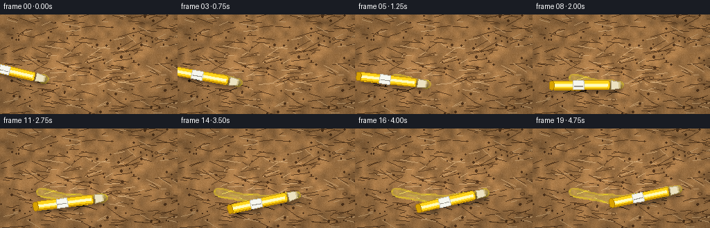
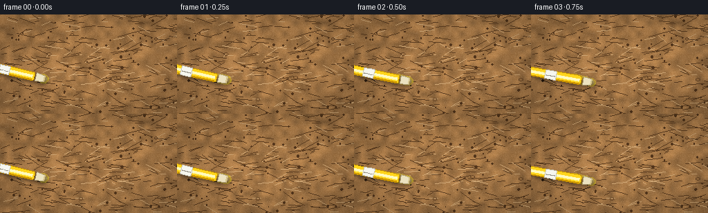

CODING AGENTS AS PIXEL WORLD MODELS
traex/Seed-2.1-Pro-0915 · phygen_034
点击播放 · 原生 RGB 像素
逐轮保存的候选
回放视频、检查图与代码变化。
每份候选均可单独播放。实际图片检查记录在下方工具轨迹中。
候选 01播放与检查图
点击播放 · 原生 RGB 像素


展开代码变化
--- 上一保存版本
+++ 本次保存版本
@@ -0,0 +1,218 @@
+"""Text-to-video: a yellow highlighter marking rough brown cardboard.
+
+Pure numpy/PIL procedural rendering. Produces 20 RGB frames at 256x144, 4 fps,
+and saves them through artifact_io.save.
+"""
+from pathlib import Path
+
+import numpy as np
+from PIL import Image, ImageDraw, ImageFilter
+
+import artifact_io
+
+W, H, N, FPS = 256, 144, 20, 4.0
+SEED = 21
+CASE_DIR = Path(__file__).parent
+
+
+# --------------------------------------------------------------------------- #
+# Cardboard surface
+# --------------------------------------------------------------------------- #
+def make_cardboard():
+ rng = np.random.default_rng(SEED)
+ base = np.array([171.0, 124.0, 74.0], dtype=np.float32)
+
+ # Low-frequency mottling: small random field upsampled to full resolution.
+ low = rng.uniform(0.82, 1.18, (18, 32)).astype(np.float32)
+ low_img = Image.fromarray((low * 128).astype(np.uint8)).resize((W, H), Image.BILINEAR)
+ low_field = np.asarray(low_img, dtype=np.float32) / 128.0
+
+ fine = rng.normal(0.0, 1.0, (H, W)).astype(np.float32)
+
+ rgb = np.empty((H, W, 3), dtype=np.float32)
+ rgb[:] = base[None, None, :]
+ rgb *= low_field[:, :, None]
+ rgb += fine[:, :, None] * 5.0
+
+ img = Image.fromarray(np.clip(rgb, 0, 255).astype(np.uint8)).convert("RGBA")
+ draw = ImageDraw.Draw(img)
+
+ # Paper fibers: mostly horizontal short streaks.
+ for _ in range(260):
+ x = rng.uniform(0, W)
+ y = rng.uniform(0, H)
+ length = rng.uniform(5, 26)
+ ang = rng.normal(0.0, 0.32)
+ dx, dy = np.cos(ang) * length, np.sin(ang) * length
+ dark = rng.random() < 0.65
+ col = (96, 64, 34, rng.integers(22, 55)) if dark else (214, 172, 120, rng.integers(18, 40))
+ draw.line([(x, y), (x + dx, y + dy)], fill=col, width=1)
+
+ # Small darker flecks and occasional pulp knots.
+ for _ in range(90):
+ x, y = rng.uniform(0, W), rng.uniform(0, H)
+ r = rng.uniform(0.4, 1.6)
+ draw.ellipse([x - r, y - r, x + r, y + r], fill=(84, 54, 28, rng.integers(30, 80)))
+ for _ in range(7):
+ x, y = rng.uniform(10, W - 10), rng.uniform(10, H - 10)
+ r = rng.uniform(2.0, 4.0)
+ draw.ellipse([x - r, y - r * 0.7, x + r, y + r * 0.7], outline=(110, 74, 40, 70), width=1)
+
+ # Gentle corner vignette.
+ yy, xx = np.mgrid[0:H, 0:W].astype(np.float32)
+ dx = (xx - W / 2) / (W / 2)
+ dy = (yy - H / 2) / (H / 2)
+ vignette = np.clip(1.0 - 0.16 * (dx * dx + dy * dy), 0.82, 1.0)
+ arr = np.asarray(img, dtype=np.float32)
+ arr[:, :, :3] *= vignette[:, :, None]
+ return Image.fromarray(np.clip(arr, 0, 255).astype(np.uint8), "RGBA")
+
+
+# --------------------------------------------------------------------------- #
+# Stroke path (gentle wave, left -> right)
+# --------------------------------------------------------------------------- #
+def path_point(u):
+ """u in [0, 1] -> (x, y, tangent_angle) on the marking path."""
+ u = np.clip(u, 0.0, 1.0)
+ x0, x1 = 58.0, 212.0
+ x = x0 + (x1 - x0) * u
+ phase = u * np.pi * 1.15
+ y = 92.0 + 10.0 * np.sin(phase)
+ dy_dx = 10.0 * np.cos(phase) * (np.pi * 1.15) / (x1 - x0)
+ return x, y, float(np.arctan2(dy_dx, 1.0))
+
+
+def stroke_half_width(u, rng):
+ # Slight hand jitter so the band is not mechanically uniform.
+ return 5.6 + 0.7 * np.sin(u * 23.0) + float(rng.normal(0.0, 0.28))
+
+
+# --------------------------------------------------------------------------- #
+# Highlighter pen (built in local coordinates, then rotated onto the scene)
+# --------------------------------------------------------------------------- #
+def rounded_rect(x0, x1, half_h, radius):
+ """CCW polygon for a rounded rectangle centered on the local x axis."""
+ r = min(radius, half_h, (x1 - x0) / 2)
+ pts = []
+ corners = [
+ (x1 - r, half_h - r, 0.0),
+ (x0 + r, half_h - r, np.pi / 2),
+ (x0 + r, -half_h + r, np.pi),
+ (x1 - r, -half_h + r, 3 * np.pi / 2),
+ ]
+ for cx, cy, a0 in corners:
+ for k in range(5):
+ a = a0 + (np.pi / 2) * k / 4
+ pts.append((cx + r * np.cos(a), cy + r * np.sin(a)))
+ return pts
+
+
+def transform(poly, tip, t, n):
+ tx, ty = t
+ nx, ny = n
+ ox, oy = tip
+ return [(ox + lx * tx + ly * nx, oy + lx * ty + ly * ny) for lx, ly in poly]
+
+
+def draw_pen(base, tip, angle):
+ t = (np.cos(angle), np.sin(angle))
+ n = (-np.sin(angle), np.cos(angle))
+
+ shadow = Image.new("RGBA", (W, H), (0, 0, 0, 0))
+ sd = ImageDraw.Draw(shadow)
+ body_shadow = rounded_rect(-98, -15, 6.4, 3.2)
+ tip_shadow = [(-15, -5.6), (-15, 5.6), (-12.5, 6.4), (0.0, 4.6),
+ (0.0, -4.6), (-12.5, -6.4)]
+ for poly in (body_shadow, tip_shadow):
+ sd.polygon(transform(poly, (tip[0] + 3.2, tip[1] + 4.0), t, n), fill=(0, 0, 0, 95))
+ shadow = shadow.filter(ImageFilter.GaussianBlur(2.6))
+ base.alpha_composite(shadow)
+
+ layer = Image.new("RGBA", (W, H), (0, 0, 0, 0))
+ d = ImageDraw.Draw(layer)
+
+ # Chisel tip: wide flat contact edge narrowing into the neck.
+ chisel = [(-12.5, -6.2), (-12.5, 6.2), (-2.0, 5.0), (0.0, 4.4),
+ (0.0, -4.4), (-2.0, -5.0)]
+ d.polygon(transform(chisel, tip, t, n), fill=(236, 226, 192, 255), outline=(176, 160, 122, 255))
+ # Felt reservoir visible at the contact slit.
+ slit = [(-1.2, -3.8), (-1.2, 3.8), (0.0, 4.2), (0.0, -4.2)]
+ d.polygon(transform(slit, tip, t, n), fill=(214, 196, 140, 255))
+
+ # Main barrel.
+ d.polygon(transform(rounded_rect(-98, -15, 6.4, 3.2), tip, t, n),
+ fill=(255, 213, 28, 255), outline=(196, 146, 0, 255))
+ # Top glossy stripe and bottom shade give the barrel volume.
+ d.polygon(transform(rounded_rect(-95, -18, 2.0, 1.0), tip, t, n),
+ fill=(255, 244, 138, 255))
+ d.polygon(transform(rounded_rect(-95, -18, 1.4, 0.8), tip, t, n),
+ fill=(255, 250, 190, 255))
+ shade_pts = [(-95, 4.6), (-18, 4.6), (-18, 6.0), (-95, 6.0)]
+ d.polygon(transform(shade_pts, tip, t, n), fill=(206, 150, 0, 255))
+
+ # White label band with a thin gray rule.
+ d.polygon(transform(rounded_rect(-68, -52, 6.5, 1.2), tip, t, n),
+ fill=(246, 246, 238, 255), outline=(200, 196, 182, 255))
+ rule = [(-66, 0.9), (-54, 0.9), (-54, 1.7), (-66, 1.7)]
+ d.polygon(transform(rule, tip, t, n), fill=(150, 146, 134, 255))
+
+ # Rounded end cap, slightly darker plastic.
+ d.polygon(transform(rounded_rect(-102, -95, 6.4, 3.2), tip, t, n),
+ fill=(216, 162, 0, 255), outline=(170, 122, 0, 255))
+
+ base.alpha_composite(layer)
+
+
+# --------------------------------------------------------------------------- #
+# Frame assembly
+# --------------------------------------------------------------------------- #
+def main():
+ rng = np.random.default_rng(SEED + 7)
+ cardboard = make_cardboard()
+
+ # Dense path samples for a smooth stroke.
+ samples = 320
+ us = np.linspace(0.0, 1.0, samples)
+ pts = np.array([path_point(u)[:2] for u in us])
+ widths = np.array([stroke_half_width(u, rng) for u in us])
+
+ frames = []
+ for f in range(N):
+ progress = min(1.0, (f + 0.85) / N)
+ frame = cardboard.copy()
+
+ # Translucent fluorescent ink revealed up to the pen tip.
+ ink = Image.new("RGBA", (W, H), (0, 0, 0, 0))
+ idraw = ImageDraw.Draw(ink)
+ count = int(np.ceil(progress * samples))
+ for i in range(count):
+ x, y = pts[i]
+ hw = widths[i]
+ idraw.ellipse([x - hw, y - hw, x + hw, y + hw], fill=(255, 232, 38, 105))
+ # Narrower, denser core so the mark reads as saturated highlighter ink.
+ for i in range(count):
+ x, y = pts[i]
+ hw = widths[i] * 0.55
+ idraw.ellipse([x - hw, y - hw, x + hw, y + hw], fill=(255, 244, 90, 60))
+ frame.alpha_composite(ink)
+
+ tip_x, tip_y, angle = path_point(progress)
+
+ # Fresh wet sheen right at the leading edge of the mark.
+ sheen = Image.new("RGBA", (W, H), (0, 0, 0, 0))
+ sh = ImageDraw.Draw(sheen)
+ sh.ellipse([tip_x - 5.5, tip_y - 4.5, tip_x + 3.5, tip_y + 4.5],
+ fill=(255, 255, 210, 55))
+ sheen = sheen.filter(ImageFilter.GaussianBlur(1.2))
+ frame.alpha_composite(sheen)
+
+ draw_pen(frame, (tip_x, tip_y), angle)
+ frames.append(np.asarray(frame.convert("RGB"), dtype=np.uint8))
+
+ frames = np.stack(frames, axis=0)
+ artifact_io.save(frames, CASE_DIR)
+ print(f"Saved {frames.shape[0]} frames at {W}x{H}, {FPS} fps to {CASE_DIR}")
+
+
+if __name__ == "__main__":
+ main()
可观测工具轨迹
实际执行的命令与返回图片。
命令 1exit 0
/bin/bash -lc 'cat prompt.txt; echo "-----"; cat GENERATION_RULES.md; echo "-----"; cat task_spec.json; echo "-----"; ls -la'
命令 2exit 0
/bin/bash -lc 'cat artifact_io.py'
命令 3exit 0
/bin/bash -lc 'python -c "import numpy, PIL; print(numpy.__version__, PIL.__version__)"'
命令 4exit 0
/bin/bash -lc 'cd "$(pwd)" && time python generate.py && ls -la frames | head -8 && ls -la'
保存候选 1 份；完成命令 4 次；可验证图片返回 0 张。原始 API 响应与完整日志保留在本地。